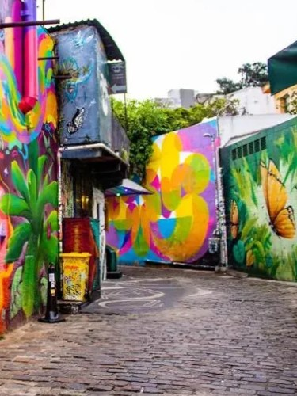

Iconic Neighborhoods of São Paulo
A guide to São Paulo's best neighborhoods: where to stay, what to see, and recommended experiences.

Avenida Paulista
São Paulo’s heartbeat. An avenue lined with museums (MASP), cultural centers, shops, offices, and a lively street scene. On Sundays, it becomes pedestrian-only, hosting markets, street performers, and cultural events. A must for visitors.

Vila Madalena
The bohemian quarter, famous for Beco do Batman and constantly changing street art, alongside galleries, cafés, and an animated nightlife. Great for an artsy afternoon and a lively evening out.

Jardins
Upscale and leafy, Jardins is São Paulo’s luxury shopping and fine-dining district. Polished boutiques, world-class restaurants, and a relaxed, walkable atmosphere for window-shopping and gastronomy.
Liberdade
São Paulo’s Japantown. With markets, themed cafés, cultural festivals, and Asian groceries. The weekend street market is a highlight for food lovers interested in takoyaki, yakitori, and local adaptations of Asian cuisine.
Pinheiros
A lively, trend-setting neighborhood with craft breweries, design stores, antique markets (Praça Benedito Calixto on Saturdays), and an energetic nightlife. Great for a local, less touristy experience.